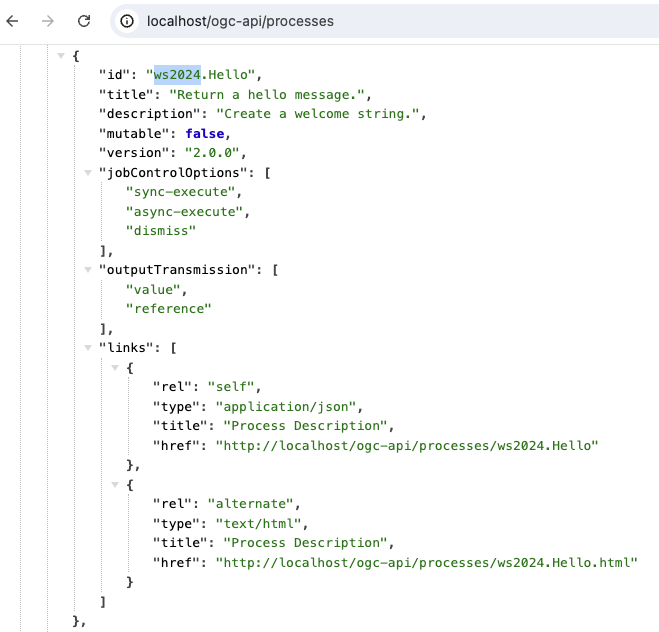
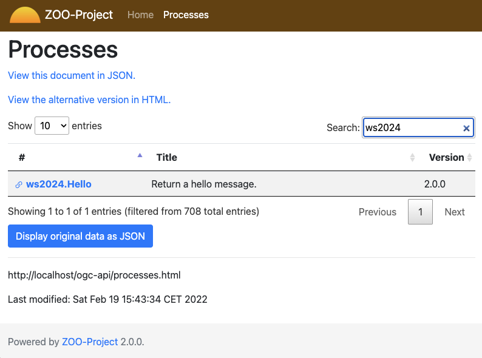
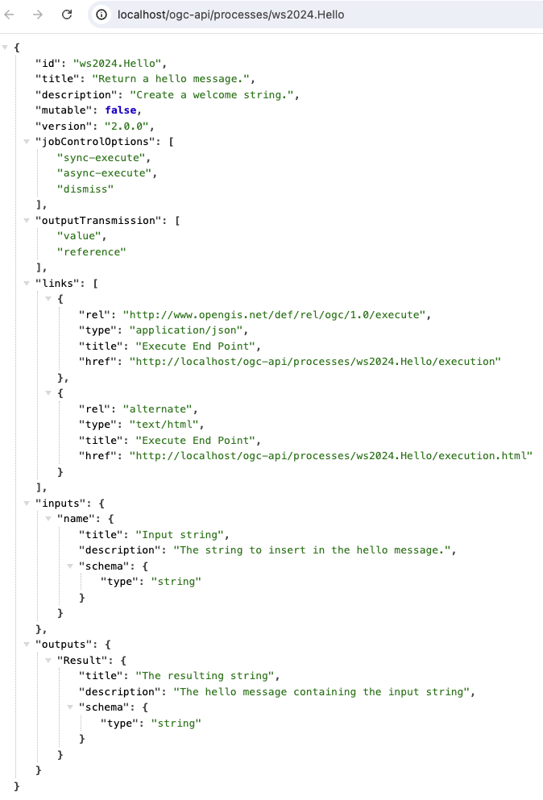
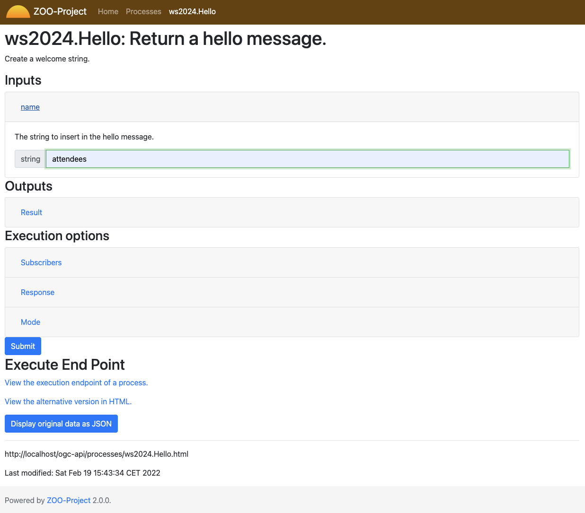
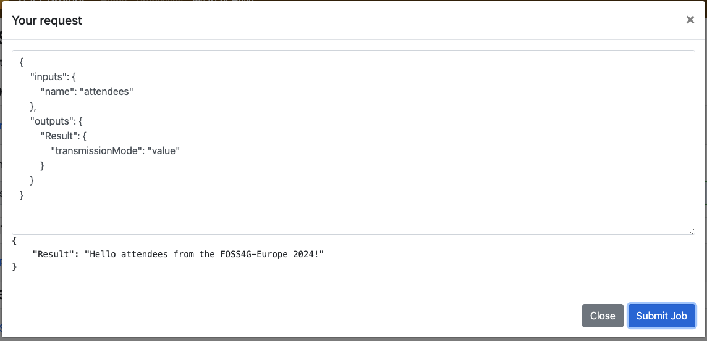

Creating your first ZOO-Service¶
Introduction¶
In this secion, you will create and publish a simple ZOO-Service named
Hello which will simply return a hello message containing the
input value provided. It will be usefull to present in deeper details
general concept on how ZOO-Kernel works and handles execution
requests.
Service and publication process overview¶
Before starting developing a ZOO Service, you should remember that in ZOO-Project, a Service is a couple made of:
a metadata file: a ZOO Service Configuration File (ZCFG) containing metadata informations about a Service (providing informations about default / supported inputs and outputs for a Service)
a Services Provider: it depends on the programming language used, but for Python it is a module and for JavaScript a script file.
To publish your Service, which means make your ZOO Kernel aware of its presence,
you should copy a ZCFG file in the directory where zoo_loader.cgi
is located (in this workshop, /usr/lib/cgi-bin) or in any
subdirectory.
Warning
only the ZCFG file is required for the Service to be considerate as available. So if you don’t get the Service Provider, obviously your Execute request will fail as we will discuss later.
Before publication, you should store your ongoing work, so you’ll start by creating a directory to store the files of your Services Provider:
mkdir -p docker/ws2024_sp
Once the ZCFG and the Python module are both ready, you can publish simply by copying the corresponding files in the same directory as the ZOO-Kernel.
Creating your first ZCFG file¶
You will start by creating the ZCFG file for the Hello Service. Edit the
docker/ws2024_sp/Hello.zcfg file
and add the following content:
[Hello]
Title = Return a hello message.
Abstract = Create a welcome string.
processVersion = 2
storeSupported = true
statusSupported = true
serviceProvider = test_service
serviceType = Python
<DataInputs>
[name]
Title = Input string
Abstract = The string to insert in the hello message.
minOccurs = 1
maxOccurs = 1
<LiteralData>
dataType = string
<Default />
</LiteralData>
</DataInputs>
<DataOutputs>
[Result]
Title = The resulting string
Abstract = The hello message containing the input string
<LiteralData>
dataType = string
<Default />
</LiteralData>
</DataOutputs>
Note
the name of the ZCFG file and the name between braket (here [Hello])
should be the same and correspond to the function name you will define in your
Services provider.
As you can see in the ZOO Service Configuration File presented above it is divided into three distinct sections:
Main Metadata information (from line 2 to 8)
List of Inputs metadata information (from 9 line to 19)
List of Outputs metadata information (from line 20 to 28)
You can get more informations about ZCFG from the reference documentation.
If you copy the Hello.zcfg file in a sub-directory (ws2024) of
your ZOO Kernel then, you will be able to request for DescribeProcess
using the ws2024.Hello Identifier. The ws2024.Hello
service should also be listed from Capabilities document.
cp docker/ws2024_sp/Hello.zcfg docker/ws2024
Test requests¶
In this section you will tests each WPS requests : GetCapabilities, DescribeProcess and Execute. Note that only GetCapabilities and DescribeProcess should work at this step.
Test accessing the processes list¶
To access the processes list, you can use the following endpoint: /processes.
Now, you should find your `ws2024.Hello`processes listed as shown bellow.
{kind=link}
You can also directly use the following URL: /processes.html to search for your service, as illustrated bellow.
{kind=link}
Test accessing the detailled description of the process¶
To access the detailled description of the ws2024.Hello process, you can use the following endpoint: /processes/ws2024.Hello.
{kind=link}
To access the HTML form giving you the capability to generate an execute request based on the description of the ws2024.Hello process, you can use the following URL: /processes/ws2024.Hello.html.
{kind=link}
Test to Execute the process¶
Obviously, you cannot run your Service because the Python file was not published
yet. If you try the following Execute request from the Basic HTML
UI, you should get the same result as illutrated bellow.
{kind=link}
Implementing the Python Service¶
General Principles¶
The most important thing you must know when implementing a new ZOO-Services
using the Python language is that the function corresponding to your Service
returns an integer value representing the status of execution
(SERVICE_FAILED [1] or SERVICE_SUCCEEDED [2]) and takes three
arguments (Python dictionaries):
conf: the main environment configuration (corresponding to the main.cfg content)
inputs: the requested / default inputs (used to access input values)
outputs: the requested / default outputs (used to store computation result)
Note
when your service return SERVICE_FAILED you can set
conf["lenv"]["message"] to add a personalized message in the ExceptionReport
returned by the ZOO Kernel in such case.
You can find bellow the first 3 sections of the main.cfg (seen
before)
file stored in a conf variable as a Python dictionnary.
1{
2 "main": {
3 "encoding": "utf-8",
4 "version": "1.0.0",
5 "serverAddress": "http://localhost/cgi-bin/zoo_loader.cgi",
6 "language": "en-US",
7 "lang": "fr-FR,en-CA,en-US",
8 "tmpPath":"/tmp/zTmp/",
9 "tmpUrl": "http://localhost/temp/",
10 "dataPath": "/usr/com/zoo-project",
11 "cacheDir": "/tmp/zTmp/",
12 "templatesPath": "/var/www/",
13 "mapserverAddress": "http://localhost/cgi-bin/mapserv",
14 "msOgcVersion":"1.0.0",
15 "cors":"true",
16 "msConfig": "/mapserver/etc/mapserver.conf"
17 },
18 "identification": {
19 "title": "The ZOO-Project OGC WPS Developement Server",
20 "abstract": "Developement version of ZOO-Project OGC WPS. See http://www.zoo-project.org",
21 "fees": "None",
22 "accessConstraints": "none",
23 "keywords": "WPS,GIS,buffer"
24 },
25 "provider": {
26 "providerName":"ZOO-Project",
27 "providerSite":"http://www.zoo-project.org",
28 "individualName": "Gerald FENOY",
29 "positionName":"Developer",
30 "role":"Dev",
31 "addressDeliveryPoint":"1280, avenue des Platanes",
32 "addressCity":"Lattes",
33 "addressAdministrativeArea": "False",
34 "addressPostalCode": "34970",
35 "addressCountry":"fr",
36 "addressElectronicMailAddress": "gerald.fenoy@geolabs.fr",
37 "phoneVoice": "False",
38 "phoneFacsimile":"False"
39 }
In the following you get a sample outputs value passed to a Python or a JavaScript Service:
1{
2 'Result': {
3 'dataType': 'string',
4 'inRequest': 'true'
5 }
6}
Note
the inRequest value is set internally by the ZOO-Kernel and can be used to determine from the Service if the key was provided in the request.
ZOO-Project provide a ZOO-API which was originally only available for
JavaScript services, but thanks to the work of the ZOO-Project
community, now you have also access to a ZOO-API when using
the Python language. Thanks to the Python ZOO-API you don’t have to remember anymore
the value of SERVICE_SUCCEDED and SERVICE_FAILED, you
have the capability to translate any string from your Python service
by calling the _ function (ie: zoo._('My string to
translate')) or to update the current status of a running service by
using the update_status [3] function the same way you use it from
JavaScript or C services.
The Hello Service¶
You can copy and paste the following into the
docker/ws2024_sp/test_service.py file.
import zoo
def Hello(conf,inputs,outputs):
outputs["Result"]["value"]=\
"Hello "+inputs["name"]["value"]+" from the FOSS4G-Europe 2024!"
return zoo.SERVICE_SUCCEEDED
Once you finish editing the file, you should copy it in the ws2024 directory:
cp docker/ws2024_sp/test_service.py docker/ws2024
If you try to run the previous request again from the HTML Basic UI, you should get a result similar to what is presented bellow.
{kind=link}
Conclusion¶
Even if this first service was really simple it was useful to illustrate how the
ZOO-Kernel fill conf, inputs and outputs parameter prior to load
and run your function service, how to write a ZCFG file, how to publish a Services
Provider by placing the ZCFG and Python files in the same directory as the
ZOO-Kernel, then how to interract with your service using both
GetCapabilities, DescribeProcess and Execute requests. We will see
in the next section how to write similar requests
using the XML syntax.
Footnotes